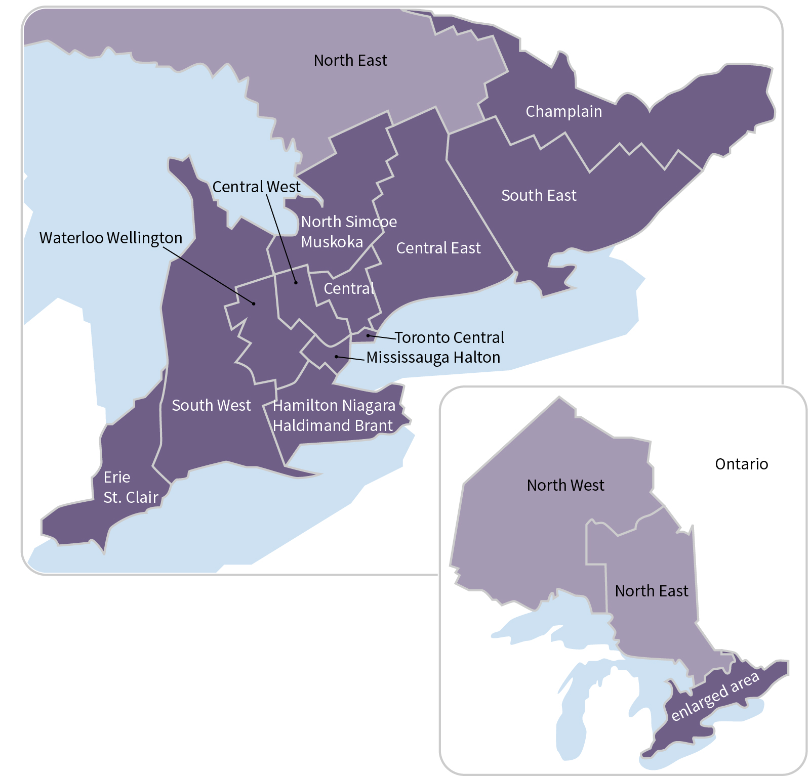

Cancer in Ontario
What is Cancer?
Cancer refers to a group of diseases with abnormal cell growth, with the potential to spread to other parts of the body. It is not a single disease. It describes a group of more than 200 individual diseases, each with its own unique causes, risk factors and care pathways.
It takes more than one physician or clinic to treat and control cancer; it takes an entire healthcare team in a variety of institutions and care settings.
Our goal is to reduce the number of people diagnosed with cancer and to ensure that patients receive high quality care at every step in their care. That means we have to attend to the entire disease pathway for each cancer beginning with prevention through to palliative care.
What is the Cancer Journey?
The cancer system begins with prevention and health promotion, with the ultimate goal being to prevent cancer in the first place. The detection and care of cancer patients involves every area of the healthcare system in some way.
To create a system of cancer control and care that is organized and delivered to respond to the needs of the population and of cancer patients, it is equally critical to ensure that each phase of care works seamlessly together. We strive to constantly improve every aspect of cancer, from prevention through to palliative care.
-
Prevention
The best way to get the upper hand on cancer is by preventing it in the first place.
-
Screening
Cancer screening detects pre-cancerous changes, or cancer at an early stage when there is a better chance of treating it successfully. Screening is for individuals who do not have any cancer symptoms.
-
Diagnosis
The diagnosis of cancer is the beginning of a personal journey, and is one of the first steps taken in the cancer care system.
-
Treatment
Once a diagnosis has been made, and cancer has been confirmed, the next part of the cancer journey is the treatment phase. There are three main ways to treat cancer: surgery, cancer drugs (chemotherapy), and radiation. While surgery entails the removal of tumours, the goal of chemotherapy and radiation is to stop or slow the growth of cancer cells.
-
Recovery/Survivorship
The most positive indication that advances in treatment, prevention and screening are working is that survival rates for the most common cancers have improved significantly. Much more work, however, needs to be done to improve survival from other types of more aggressive cancers. When treatment for these cancers is unsuccessful, patients move to receiving end-of-life care.
End-of-life care
Palliative (or end-of-life) care is a holistic approach to active and supportive care for patients and their families facing a life-threatening illness. The aim is to prevent and ease suffering, while promoting an excellent quality of life right up until the end of life
How are Cancer Services Organized?
The cancer system is organized into Regional Cancer Programs (RCPs) corresponding with the province's 14 Local Health Integration Networks (LHIN). RCPs are networks of healthcare providers, including regional cancer centres, and stakeholders including patient groups involved in providing cancer prevention, screening, and diagnostic and treatment services in the LHIN.
How many Ontarians are affected by cancer?
The following data looks at a incidence and mortality of cancer in Ontario for a subset of cancer types. Hover over the cells to view more details, columns and rows can be sorted
See notes on dataset View explanation of statistical terms

Statistical Terms
- Incidence
- Mortality
- Cancer site: refers to the location in the body of the initial (primary) cancer
- Age standardized rates: Mean for age standardized incidence/mortality rate per 100,000 person-years, age-adjusted to the 2011 Canadian population; 95% Confidence intervals (CI), Tiwari method, for rates.
- Standard error (for age-standardized incidence/mortality rate): A measure of how much the age standardized rates vary. Typically, rates calculated using fewer case counts have higher standard errors.
- Lower 95% CI: Lower limit of 95% confidence interval for age-standardized incidence/mortality rate; An estimate of a potential lower value of the rate.
- Upper 95% CI: Upper limit of 95% confidence interval for age-standardized incidence/mortality rate; An estimate of a potential higher value of the rate.
- Count: Number of incidence/mortality; All case counts are randomly rounded to multiples of 5 in consideration of personal health information and the protection of privacy.
- Population: Estimated population corresponding to the region, sex, age and year selected.
- RSE (Relative Standard Error as a percentage): A measure of how reliable the rates are, calculated by dividing standard error by mean for each age-standardized incidence/mortality rate and multiplying by 100.
- RSE flag: RSE in excess of 23% where 1 = RSE over 23%; 0 = RSE below 23%, The estimate was considered to be imprecise when RSE is greater than 23%, therefore the estimate is suppressed.
Notes
- Missing data indicates imprecise estimates, or suppressed data to protect personal health information.
- To be comparable with the LHIN level statistics, Ontario statistics exclude cancer cases of unknown residence (LHIN); therefore, provincial statistics may not match the true counts and rates published elsewhere
- Counts of cancer cases were randomly rounded to multiples of 5 independent of other cells in the data to protect personal health information. As a result, sums of subgroup counts (e.g. LHIN) may not equal total counts (e.g. Ontario).
- Erie St. Clair
- South West
- Waterloo Wellington
- Hamilton Niagara Haldimand Brant
- Central West
- Mississauga Halton
- Toronto Central
- Central
- Central East
- South East
- Champlain
- North Simcoe Muskoka
- North East
- North West